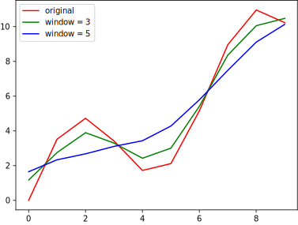
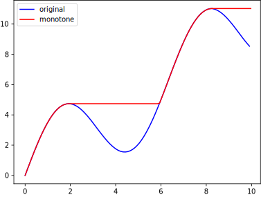

basic¶
- alpsplot.utils.normalize(x, _min=None, _max=None, tgt_min=0.0, tgt_max=1.0)[source]¶
Normalize a
numpy.ndarrayinto desired range.- Parameters:
x (numpy.ndarray) – The unnormalized array.
_min (float) – The lower bound of original
x. Defaults tomin(x)._max (float) – The upper bound of original
x. Defaults tomax(x).tgt_min (float) – The lower bound of original
x. Defaults to0.0.tgt_max (float) – The upper bound of original
x. Defaults to1.0.
- Returns:
numpy.ndarray – A normalized array.
- Example:
>>> import numpy as np >>> from alpsplot.utils import normalize >>> >>> x = np.array([-10, -5, 0, 5, 10]) >>> normalize(x) array([0. , 0.25, 0.5 , 0.75, 1. ]) >>> normalize(x, _min=-100, _max=100) array([0.45 , 0.475, 0.5 , 0.525, 0.55 ]) >>> normalize(x, tgt_min=-1, tgt_max=1) array([-1. , -0.5, 0. , 0.5, 1. ])
- alpsplot.utils.avg_smooth(x, window=3, method='mean')[source]¶
Average smooth a
numpy.ndarrayusing a given window size.Paddings are added at head and tail.
- Parameters:
x (numpy.ndarray) – The unsmoothed array.
window (int) – The window size (number of points). Defaults to
3.method (str) – Choose from
['mean', 'median', 'min', 'max']. Defaults to'mean'.
- Returns:
numpy.ndarray – A smoothed array.
- Example:
- 
import numpy as np import matplotlib.pyplot as plt from alpsplot.utils import avg_smooth x = np.arange(10, step=1) y = x + 3 * np.sin(x) y2 = avg_smooth(y) y3 = avg_smooth(y, window=5) plt.plot(x, y, color='red', label='original') plt.plot(x, y2, color='green', label='window = 3') plt.plot(x, y3, color='blue', label='window = 5') plt.legend() plt.show()
{kind=link}
- alpsplot.utils.monotone(x, increase=True, reverse=False)[source]¶
Monotonize a
numpy.ndarray.All non-monotonic points would be clipped as previous value.
- Parameters:
x (numpy.ndarray) – The non-monotonic array.
increase (bool) – Monotonically increase or decrease. Defaults to
True.reverse (bool) – Enable to clip from right to left. Defaults to
False.
- Returns:
numpy.ndarray – A monotonic array.
- Example:
- 
import numpy as np import matplotlib.pyplot as plt from alpsplot.utils import monotone x = np.arange(10, step=0.1) y = x + 3 * np.sin(x) y2 = monotone(y) plt.plot(x, y, color='blue', label='original') plt.plot(x, y2, color='red', label='monotone') plt.legend() plt.show()
{kind=link}